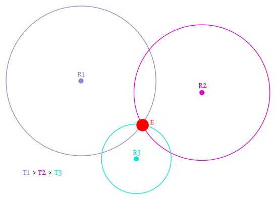

La présentation peut être suivie sur...
LoRa localisation
HESSO - hepia
ITI
Sebastien Chassot - sebastien.chassot@etu.hesge.ch
trilatération
synchronisation des horloges R1,R2,R3
détection de la réception et timestamp
on peut ainsi en déduire la position de E
utilisation du signal PPS (pulse per seconde) du GPS
précision GPSDO de l'ordre de la ns
précision du compteur du FPGA 20ns (50MHz)
Une onde radio parcourt ~5m en 20ns
Outils de développement

Software Defined Radio - SDR
permet l'aquisition/traitement d'un signal radio
FPGA Xilinx Spartan 6
API C++ comuniquant avec le core du FPGA
Vue d'ensemble USRP B200

multitude de bus (wishbone, AXI-stream, GPIF,...)
flux de contrôle, radio RX/TX et UART entrelacés

compteur interne synchronisé
trigger par detection ou manuelle
relecture via le protocole de la carte
Travail en cours
Hijack des registres, du GPS et de l'API C++
ajout des registres dans le FPGA
extension de l'API pour permettre une communication entre l'OS et le matériel
détourner l'API pour qu'elle reconnaisse le GPS
Travail à effectuer
évaluer la synchronisation des récepteurs
implémenter l'algorithme de detection de paquets LoRa
écrire un programme exploitant la nouvelle API
faire des tests grandeur nature
Questions ?
liens
https://media.ccc.de/v/33c3-7945-decoding_the_lora_phy (vidéo)
https://github.com/selinux/uhd (code du projet)
https://github.com/selinux/fpga (code de la partie FPGA)
follow presentation on...https://selinux.github.io/localisation_lora_presentation